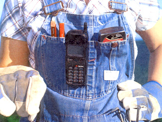
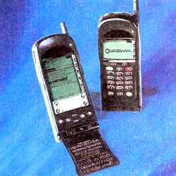
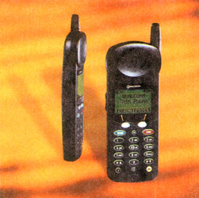
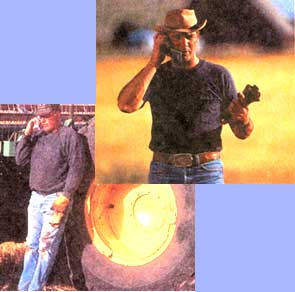
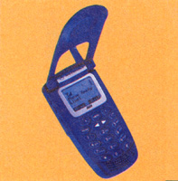
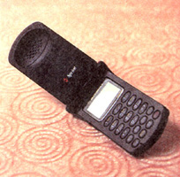
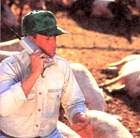

Cell phones suffer from a well-earned image problem. What in essence is a practical and relatively inexpensive way to free yourself from the phone grid has been tainted by countless brokers, lawyers and self-proclaimed Brahmins shouting into their handsets, while the rest of us shake our heads, plug our ears and wonder. Cell phones have long been an annoying joke to those of us who could actually manage to take a drive or a walk without closing a deal at the same time. The trouble is that 15 years of cellular market expansion is rapidly making a minority out of we purists.
Today, nearly 70 million people in the United States carry a cell phone-one third of all the adults in the nation! And if we can keep ourselves from trumpeting into them in a crowded diner, there are some very practical reasons why having a portable phone makes sense. Car emergencies, extended road trips, fishing weekends and dozens of other occasions
that keep us away from home might be made easier by a pocket-sized way to stay in touch. And given the choice between a $10,000 outlay for a half-mile extension of line to a remote residence (followed by an eternity of monthly bills) or a $150 cellular phone and an unchanging monthly bill, mobile phones Suddenly start to a whole lot more reasonable.
But how does one phone model differ from another? Which Monthly billing plans offer the most hang for the buck? And how can you be sure that your phone will work in Jordan, Montana?
Cellular technology has come a long way since June 1983, when the first analog wireless phones hit the market. Back then the average monthly bill was around $95 a mouth, the Phones themselves were the size of small ham radio...and about as heavy, and frequency signals were inconsistent and fuzzy thanks to an incomplete network of radio towers around the country. But the market being the market, it was only a matter of time before enough towers were built and in around every mid-sized community in the nation and the technology grew smarter and became more efficient.
The industry now boasts annual revenues Of almost $30 billion and annual average monthly rate Of just under $40. Along with this boom has come expanded coverage making wireless services more readily available to those of us outside of urban areas But the quality of that service can vary a lot, depending on where you live.
Obviously, the most important factor you need to consider when buying a cell phone is reception. Unfortunately most cell phone companies have targeted major urban centers and their surrounding areas for the lion's share of cellular subscriptions, making it harder to get excellent reception if you're too far off the normally traveled routes between cities. In the remotest area,, you may be completely out of luck unless you go for the Iridium phone, a satellite handset that, very expensively, allows phone calls from literally anywhere on the planet. Even so, knowing the difference between analog Mid digital services is important, especially if you plan on using a Phone from the city it.
The biggest difference between the two is clarity of reception and strength of frequency. Years of saturating the coun try with transmission towers has given analog phones a typically longer range than digital phones, but they also have more static and faint hissing noises in the background. Digital phones, on the other hand, generally give a clearer message but with a shorter range.
Living in the sticks makes digital phones a liability at the moment, particularly if they're purchased for emergency purposes. Our research found that when you start getting too far off the beaten track the digital connection begins to clip on and off before losing the signal all together. This is especially true if you're in low-lying or hilly areas. Get to a high point and things clear Lip considerably. Or wait a bit, as this is all expected to change in several years, when the digital network should catch LIP with the volume of phones already on the market (i.e., the industry will expand their fiber optics), making coverage much more thorough.
Ham radio-sized handsets are history.
For now there are dual mode phones that offer both analog and digital in one, allowing the caller to keep a signal once he or she leaves the invisible digital boundaries and "roams" into analog territory.
Interestingly, analog phones, once the only option for wireless service, are slowly being phased out as companies expand their digital coverage to incorporate more of the country. Some companies, like Prime Co. and Nextel, are all-digital and Sprint,
AT&T and GTE are rapidly going in that direction, already offering digital-only packages that include a phone/rate plan combination. However, these packages are noticeably more expensive than an analog only or a dual mode package (AT&T's Digital One Rate starts at $89.99 per month). And if you don't use up all of your minutes, they don't get carried over to the next month. Nevertheless, digital phones offer options like e-mail and headline news that analog phones do not.
So what kind of phone do you buy.? At the moment, if you live in a rural area it's best to get an analog phone because of the thorough coverage they afford. But with the industry headed toward an all digital network, if you're buying for the long-term, you're better off spending the extra money for a dual band. You'll find your most compact and expensive options among the digital phones. But before you lay down any money, find out what kind of coverage you can get in your area and go from there.
There are more than a dozen cell phone manufacturers out there, but your shopping choices are going to be made far easier by first determining what kind of calling plan best suits your needs. Often times the plan will dictate which phone you buy. For instance, if you like the rates that Nextel is offering, you'll be limited to a Motorola-made phone because Motorola is the only brand Nextel carries. Bringing in a phone made by Samsung and asking to get set up with a Nextel plan will do you no good. Besides, the price of the phone is usually tied into the start-up price of the plan, so it's cheaper to buy both at once.
Each phone, too, has its own style and menu options. The newer digital phones are smaller and lighter than their analog counterparts. There are phones with or without antennas. Some have different rings or buzzes to choose from.
Some, like the Nokia 6160, even offer built-in video games. That said, the best way to choose a phone is to go out and play with a few at the sales office until you find the one that's right for you. While you're there you might want to pay attention to a few details like battery type, length of battery life, size, weight and general comfort of the phone while you're using it. Also, keep in mind that the reception you get is dependent on the phone's ability to hold onto a call when it receives one. For analog phones make sure you get a powerful receiver capable of fielding plenty of radio frequencies. If you're looking at digital or dual mode phones be sure to find out which platform the phone operates on, whether it be TDMA (Time Division Multiple Access), CDMA (Code Division Multiple Access) or GSM (Global Standard for Mobile Communication), a standard used mostly in Europe that is being slowly introduced in the United States. CDMA is the most advanced in digital technology and allows cell phone companies like Prime Co. and Sprint PCS to handle far more calls on their digital networks, while giving clearer quality signals in the phones.
As for the battery, the preferred type for a cell phone is the lithium, which reserves power when you turn the phone off. Other types continuously lose juice even when you're not using them. We found that the digital phones conserved energy better than the analog or dual mode phones. Charging frequency with the digital phones was about every three days, while the analog or dual mode phones needed a little more attention-say, once every two days. If you find that charging a phone is an inconvenience or if you know you'll be away from an outlet for long periods of time, you might want to consider buying a cigarette lighter adapter for your car or even a backup battery and a charging "cradle." Still, not all phones offer these options, so be careful. With the Qualcomm models, for instance, you can only charge the battery when it's attached to the phone.
Though nearly all of these phones are quite small, the larger models can become a surprising nuisance to carry around. A few ounces will make a big difference. Phones like AT&T's Nokia 6100 series, the best all-around phones we tested and the most popular wireless phones on the market, were a pleasure to carry because of their smooth and slim design. The 6160's keypad features easy scroll keys that took us straight to our programmed list of telephone numbers, while the easy to read display continuously shows battery and reception strength as well as time of day. On top of that, the signals were always sharp, even when using long-distance.
In contrast, Nextel's Motorola i1000, while small and compact, has confusing options for its menu, requiring a multitude of button pressing to get the necessary information. One big mark in the Motorola's favor, however, is its ability to double as a speakerphone-a far safer option for car or truck use. But the biggest selling point for the i1000 is the "Direct Connect" feature, a useful short-range walkie-talkie option that lets you talk to anyone in your area code as long as they have an i1000 and you have the right code. The reception is clear and it's cheaper and quicker than roaming for an actual phone call when you're in rural areas...perfect for outdoor workers.
The Sanyo SPC-3000 dual mode phone sold by Sprint is a solid phone with good reception in both the digital and analog areas. It's a little bulkier than either the Motorola or the Nokia, but it's easier to use than the Motorola. The Sanyo's only drawbacks seem to be its scroll keys-which are located at the bottom of the keypad, making them awkward to access-and its short battery life.
Two other mainstream phones you might want to take a look at are the Qualcomm and Erickson models. Having joined forces in May, the conglomerate is offering the best of cellular technology: Qualcomm's advanced CDMA digital quality combined with Erickson's sleek, Swedish handset designs.
For the purpose of this article we looked at the country's five largest cellular service providers offering the broadest amount of coverage. Sprint, AT&T and Nextel provide thorough nationwide coverage. GTE markets mostly in Texas and the South as well as in some Western and Northwestern states, while Prime Co. operates mainly in the Midwest.
One of the first things we learned and you should know is that there's a lot of fine print when it comes to the monthly plans. As a general rule, when you sign up for a rate plan from any of these companies you are signing on for a specific number of minutes. These can range from 30 to 1,600 minutes per month, depending on your calling needs.
Long-distance options run the gamut from nonexistent to downright economical: With companies like AT&T offering wireless customers a 10 cents a minute domestic-long-distance rate, cell phone calling can be as cheap, if not cheaper than, land-line services. Be ever-vigilant, however, in watching for extra expenses. Some companies charge as much as 40 cents a minute for time in excess of your plan, including time racked up when people call you.
These companies didn't grow to be industrial giants by accident. They know, as do the majority of the 70 million U.S. cell phone owners, that once picked up, the little buggers are virtually impossible to put down. Highly nonessential chitchat proliferates...and bills skyrocket.
Our informal survey of 50 cell phone users proved to us that even occasional talkers find it tough to limit their calls to less than two hours a month. Though tempted at first by those low $29.99-per-120-minute monthly fees, excess talking time will very, very quickly produce a bill of $100 or more.
Then there are roaming charges. These costs go into effect once you leave your "home" area and can increase the bloodletting at a clip of up to 60C a minute. Oftentimes this can be avoided by choosing as your home area the place from which you make the most calls. If you're commuting and find that you're using the phone mainly at and around work, then you might want to consider choosing your work area as home base. But keep in mind that this will turn calls from where you sleep into roaming calls.
Still, price wars among the giants are forcing prices slowly downward. GTE, for one, has begun statewide services offering flat rates with no roaming charges. Nextel claims to have gone around roaming charges by introducing their "Direct Connect" option into their Motorola phones. The only problem there is that everyone you want to "direct connect" with has to have a Motorola phone. Even Sprint PCS and AT&T Digital One Rate offer plans with no extra charge for roaming, but again, be wary of the fine print. If you stray from the Sprint network, for example, and make a long-distance call outside the network boundaries, you're still charged a roaming fee.
Given all the different types of phones and plans out there, with a bit of legwork you should be able to find a service that will cater to your individual telephone needs,
A good option that most companies are selling is "off peak" minute packages for weekends and evenings. If you make a lot of "off peak" calls, these can be very attractive bundles that don't use up the minutes on your base plan. Sprint, for example, offers 600 "off peak" minutes for $6.99 a month, defining that time as 8 P.m. to 7 A.M. Mondays through Thursdays and 7 P.M. Fridays to 7 A.M. Saturdays. Likewise, AT&T sells 500-minute weekend packages for $9.99.
Other, pricier options include things like voice mail or e-mail. These can quickly add up, so be realistic when factoring them into your budget. One of Prime Co.'s all-digital rate plans, for example, advertises at a very reasonable base rate of $24.99 per month for 100 minutes. But add to this a "Pre-Pay Set-vice Fee" of $4.99 a month, an extra 320 a minute for retrieving voice mail, plus another $9.95 a month for the company's "Text Messaging" e-mail option and suddenly that original $24.99 has shot up closer to $40. By contrast, Sprint offers a base plan of 120 minutes for $29.99 that includes voice mail and has no monthly maintenance fee.
One more thing to keep in mind is that most service providers bind you to a contract that says you will use their service for a certain amount of time and that you will use one of the phones they carry. The AT&T Digital One Rate, for instance, has a contract stipulation that says subscribers must sign on for a term of one year, use a digital multi-network phone from AT&T (a Nokia) and subscribe to AT&T Wireless Services long-distance. If you don't feel comfortable partaking of all of these options, you'll have to look for another service provider. GTE, on the other hand, offers the GTE Riskless Wireless service, which allows you to change the plan or the required GTE phone if you are not happy with either. But watch out: the fine print says "within 30 days of purchase." The bottom line is you still have to sign a one-year contract with GTE. They just give you 30 days to renege on it.
After carrying around a number of phones for three months, we found that the cellular life could be remarkably convenient at times and more than mildly irritating at others. That we could contact or be contacted by others regardless of whether we were outside working or in town buying groceries was at the same time comforting and exasperating. Not only are there moments when you don't want to talk to anyone, but the creeping insinuation of the thing into our lives caused some staffers a good deal of discomfort. Learning to flick off the power switch quickly became as tricky an enterprise as using it.
Then there's the cost to think about. If you're paying for both land line and cell phone services the bill can be a burden, and unless you really need a cell phone, it will be the first to go. Then again, with long-distance, voice mail and regular calls included in some of these flat rate cellular plans, substituting a wireless handset for a land-line phone might be a reasonable option, depending on your phoning habits. Basically, if your work demands that you be on the phone even just some of the time, then wireless phones can be an invaluable tool, especially if yours is a job that keeps you mainly out of doors.
Though it was a photo finish, the majority of the cell phone users we spoke to considered it an advantage to use one with Careful shopping ill make budget maintenance a far easier occupation, but nothing will save you from the nagging realization that the world is rapidly evolving into a place where corners of refuge are getting smaller. Lord help us.
The Phone of the Future: Going Satellite with Iridium
Cell Phones and Cancer: Myth or Malignancy?
|
 COURTESY OF QUALCOM Qualcomm's CDMA pdQ smartphone combines durability with the latest digital technology. |
 COURTESY OF QUALCOM Ham radio-sized handsets |
 TONY STONE /GARY HOLSCHER IMAGE BANK /BARROS & BARROS Nextel's walkie talkie attracts outdoor workers |
|
 PETER ARNOLD/LIOR RUBEN The micro Sprint Startak remains a favorite |
 COURTESY OF NEXTEL |
COURTESY OF QUALCOM |
|
 THE STOCK MARKET/PETER BECK |
 |
|